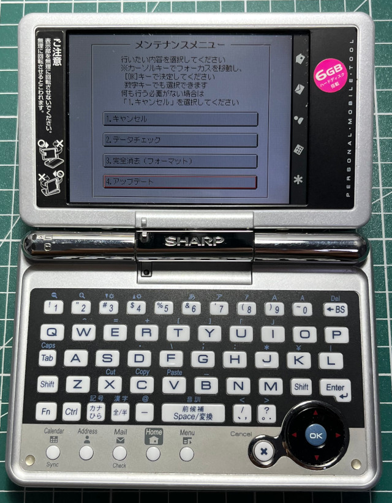
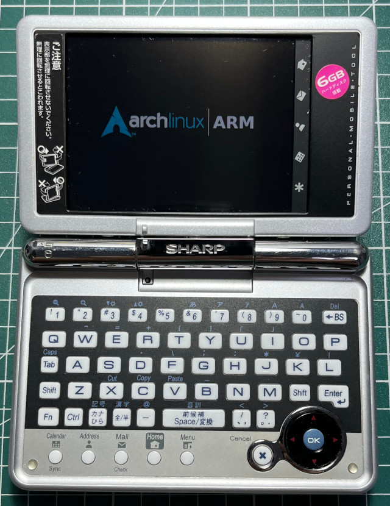
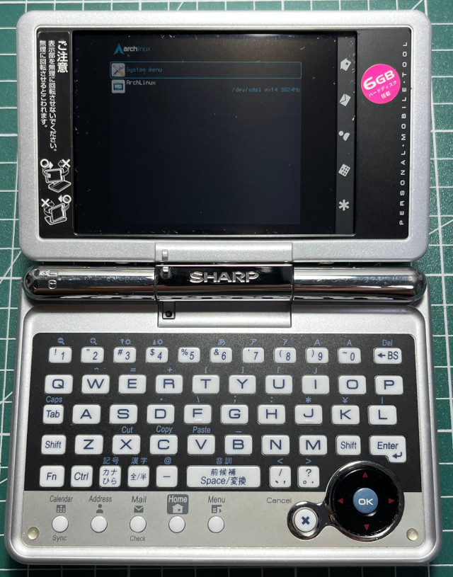
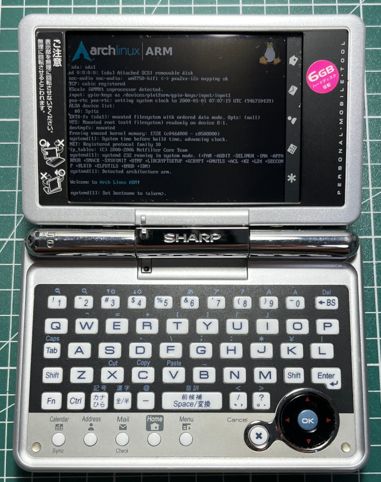

參考資訊：
https://github.com/greguu/ZALARM-install
https://www.oesf.org/forum/index.php?topic=34421.0
刷機步驟：
1. 準備一張4GB SDCard並且格式化成FAT格式(在Windows系統下)
2. 下載https://github.com/steward-fu/website/releases/download/zaurus/archlinux_arch-kexecboot.tar
3. 解壓縮arch-kexecboot.tar到SDCard根目錄
4. 拔掉充電線、取出Zaurus電池
5. 接回充電線、放回Zaurus電池
6. 按住OK + On/Off開機，選擇第4個選項後，按下OK刷kexecboot



